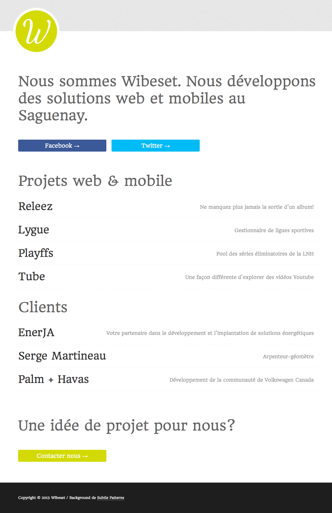
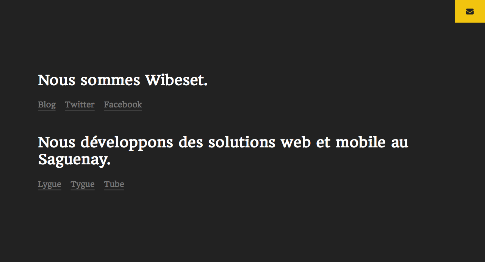

" Perfection is achieved, not when there is nothing more to add, but when there is nothing left to take away. " - Antoine de Saint-Exupery
Chaque fois que je travaille sur un nouveau projet ou juste une fonctionnalité, je penses toujours à cette citation d'Antoine de Saint-Exupery. Parresseux un peu de nature, j'essaie toujours de trouver la façon la plus simple d'arriver à mon but.
Simplicity and clarity lead to good design
Quel est le minimum pour que mon produit ou ma fonctionnalité soit viable ? Quels informations dois-je absolument transmettre à l'utilisateur pour que son expérience soit agréable ? Questions simples, réponses parfois complexe.
Difficile à voir. Toujours en mouvement est l'avenir. - Yoda
Il est facile de tomber dans le côté obscur de la force. C'est un constant combat. Il est impossible de prédire l'avenir et il peut être complexe de déterminer ce que l'utilisateur voudra réellement.
Bref, tout ça pour dire que j'ai eu le goût de refaire Wibeset. En fait, je crois que j'ai le goût de le refaire en totalité pratiquement toutes les années. Peu importe, mon but était que tout entre dans une fenêtre... pas de scrolling défilement. Et puisque je focus maintenant sur les "projets maisons" tel que Lygue, je pouvais me permettre de retirer la portion clients.
Avant

Et maintenant...
